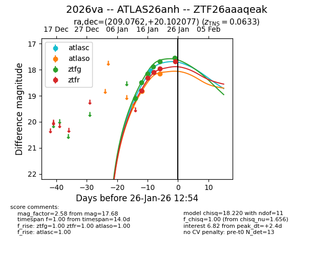
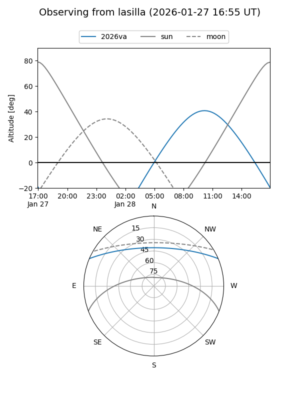
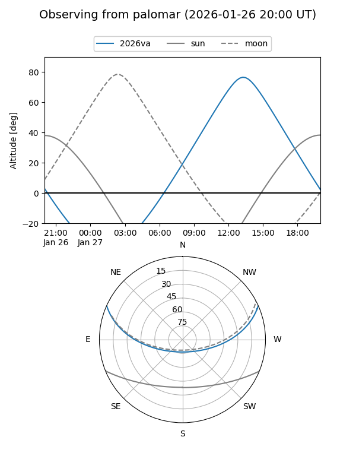
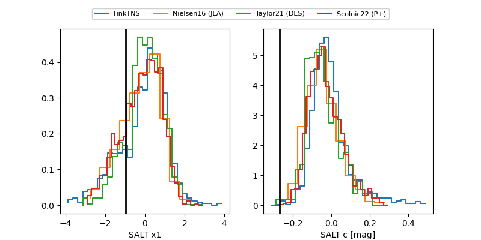

2026va
Target 2026va at 2026-01-23 18:01
Aliases and brokers:
FINK: link
Lasair: link
ALeRCE: link
TNS: link
YSE: link
alt names
ZTF26aaaqeak (ztf,fink_ztf)
2026va (tns,yse)
ATLAS26anh (atlas)
Coordinates:
equatorial (ra, dec) = 209.0762,+20.10208
equatorial (HMS+DMS) = 13:56:18.28,+20:06:07.48
galactic (l, b) = (11.0586,+73.58439)
Flags:
confirmed ia
Photometry:
last atlasc=18.04, atlaso=18.15, ztfg=17.67, ztfr=17.96
2 atlasc, 2 atlaso, 5 ztfg, 4 ztfr detections
Lightcurve

Visibility


Additional plots
